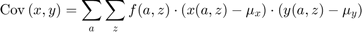
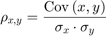

FF_DISC_RAND_VAR_MASS2COVCOR Corr and Cov given X(s), Y(s) and f(s)
Given probability mass function f(s), X(s), and Y(s), compute the covariance and correlation betwen X and Y.
* MT_X_OF_S matrix or array of x values at each s point * MT_Y_OF_S matrix or array of y values at each s point * MT_F_OF_S matrix or array probability mass at each s point * FL_X_MEAN float x mean * FL_X_SD float x standard deviation * FL_Y_MEAN float y mean * FL_Y_SD flat y standard deviation
[FL_COV_XY, FL_COR_XY] = FF_DISC_RAND_VAR_MASS2COVCOR() default dataframe test correlation and covariance
[FL_COV_XY, FL_COR_XY] = FF_DISC_RAND_VAR_MASS2COVCOR(MT_X_OF_S, MT_Y_OF_S, MT_F_OF_S) calculates correlation and covariance based on a multi-column of single column matrix of x values, and matrix of y values corresponding to state-space points s, and the probability mass over s.
[FL_COV_XY, FL_COR_XY] = FF_DISC_RAND_VAR_MASS2COVCOR(MT_X_OF_S, MT_Y_OF_S, MT_F_OF_S, BL_DISPLAY_DRVM2COVCOR) calculates var and sd without printing verbose info.
[FL_COV_XY, FL_COR_XY] = FF_DISC_RAND_VAR_MASS2COVCOR(MT_X_OF_S, MT_Y_OF_S, MT_F_OF_S, FL_X_MEAN, FL_X_SD, FL_Y_MEAN, FL_Y_SD, BL_DISPLAY_DRVM2COVCOR) computes cov and cor with already calculated x and y means and standard deviations to avoid recomputing.
See also FX_DISC_RAND_VAR_MASS2COVCOR
Contents
function [fl_cov_xy, fl_cor_xy] = ff_disc_rand_var_mass2covcor(varargin)
FF_DISC_RAND_VAR_MASS2COVCOR find cov(x,y) given X(a,z), Y(a,z) and f(a,z)
Having computed elsewhere E(X), E(Y), and SD(X), SD(Y), and given X(a,z) and Y(a,z), which are the optimal choices along the endogenous state space grid a, and the exogenous state space grid z, and given also f(a,z), the probability mass function over (a,z), we compute covariance and correlation between outcomes X and Y.
- Covariance

- Correlation

Parse Main Inputs and Set Defaults
if (~isempty(varargin)) if (length(varargin) == 3 || length(varargin) == 4) if (length(varargin) == 3) [mt_x_of_s, mt_y_of_s, mt_f_of_s] = varargin{:}; else [mt_x_of_s, mt_y_of_s, mt_f_of_s, bl_display_drvm2covcor] = varargin{:}; end % X-mean st_x = 'x_outcome'; [ar_f_of_x, ar_x_sorted, ~, ~] = ... fft_disc_rand_var_mass2outcomes(st_x, mt_x_of_s, mt_f_of_s); [ds_stats_x_map] = ff_disc_rand_var_stats(st_x, ar_x_sorted', ar_f_of_x'); fl_x_mean = ds_stats_x_map('fl_choice_mean'); fl_x_sd = ds_stats_x_map('fl_choice_sd'); % Y-mean st_y = 'y_outcome'; [ar_f_of_y, ar_y_sorted, ~, ~] = ... fft_disc_rand_var_mass2outcomes(st_y, mt_y_of_s, mt_f_of_s); [ds_stats_y_map] = ff_disc_rand_var_stats(st_y, ar_y_sorted', ar_f_of_y'); fl_y_mean = ds_stats_y_map('fl_choice_mean'); fl_y_sd = ds_stats_y_map('fl_choice_sd'); elseif (length(varargin) == 7 || length(varargin) == 8) if (length(varargin) == 3) [mt_x_of_s, mt_y_of_s, mt_f_of_s, ... fl_x_mean, fl_x_sd, ... fl_y_mean, fl_y_sd] = varargin{:}; else [mt_x_of_s, mt_y_of_s, mt_f_of_s, ... fl_x_mean, fl_x_sd, ... fl_y_mean, fl_y_sd, bl_display_drvm2covcor] = varargin{:}; end end else it_states = 6; it_shocks = 5; fl_binom_n = it_states-1; ar_binom_p = (1:(it_shocks))./(it_shocks+2); ar_binom_x = (0:1:(it_states-1)) - 3; % f(z) ar_binom_p_prob = binopdf(0:(it_shocks-1), it_shocks-1, 0.5); % f(a,z), mass for a, z mt_f_of_s = zeros([it_states, it_shocks]); for it_z=1:it_shocks % f(a|z) f_a_condi_z = binopdf(ar_binom_x - min(ar_binom_x), fl_binom_n, ar_binom_p(it_z)); % f(z) f_z = ar_binom_p_prob(it_z); % f(a,z)=f(a|z)*f(z) mt_f_of_s(:, it_z) = f_a_condi_z*f_z; end % x(a,z), some non-smooth structure rng(123); mt_x_of_s = ar_binom_x' - 0.01*ar_binom_x'.^2 + ar_binom_p - 0.5*ar_binom_p.^2 + rand([it_states, it_shocks]); mt_x_of_s = round(mt_x_of_s*3); % y(a,z), some non-smooth structure rng(456); mt_y_of_s = 10 -(mt_x_of_s) + 15*(rand([it_states, it_shocks])-0.5); % Obtain mean and sd st_x = 'x_outcome'; [ar_f_of_x, ar_x_sorted, ~, ~] = ... fft_disc_rand_var_mass2outcomes(st_x, mt_x_of_s, mt_f_of_s); [ds_stats_x_map] = ff_disc_rand_var_stats(st_x, ar_x_sorted', ar_f_of_x'); fl_x_mean = ds_stats_x_map('fl_choice_mean'); fl_x_sd = ds_stats_x_map('fl_choice_sd'); st_x = 'y_outcome'; [ar_f_of_y, ar_y_sorted, ~, ~] = ... fft_disc_rand_var_mass2outcomes(st_x, mt_y_of_s, mt_f_of_s); [ds_stats_y_map] = ff_disc_rand_var_stats(st_x, ar_y_sorted', ar_f_of_y'); fl_y_mean = ds_stats_y_map('fl_choice_mean'); fl_y_sd = ds_stats_y_map('fl_choice_sd'); % display bl_display_drvm2covcor = true; end
1. Compute Covariance
mt_x_devi_from_mean = (mt_x_of_s - fl_x_mean);
mt_y_devi_from_mean = (mt_y_of_s - fl_y_mean);
mt_x_y_multiply = (mt_x_devi_from_mean).*(mt_y_devi_from_mean);
mt_cov_component_weighted = mt_f_of_s.*(mt_x_y_multiply);
fl_cov_xy = sum(mt_cov_component_weighted, 'all');
2. Compute Correlation
fl_cor_xy = fl_cov_xy/(fl_x_sd*fl_y_sd);
Display
if (bl_display_drvm2covcor) covvar_input_map = containers.Map('KeyType','char', 'ValueType','any'); covvar_input_map('mt_x_of_s') = mt_x_of_s; covvar_input_map('mt_y_of_s') = mt_y_of_s; covvar_input_map('mt_f_of_s') = mt_f_of_s; covvar_input_map('fl_x_mean') = fl_x_mean; covvar_input_map('fl_x_sd') = fl_x_sd; covvar_input_map('fl_y_mean') = fl_y_mean; covvar_input_map('fl_y_sd') = fl_y_sd; ff_container_map_display(covvar_input_map, 25, 15); covvar_output_map = containers.Map('KeyType','char', 'ValueType','any'); covvar_output_map('mt_x_devi_from_mean') = mt_x_devi_from_mean; covvar_output_map('mt_y_devi_from_mean') = mt_y_devi_from_mean; covvar_output_map('mt_x_y_multiply') = mt_x_y_multiply; covvar_output_map('mt_cov_component_weighted') = mt_cov_component_weighted; ff_container_map_display(covvar_output_map, 25, 15); disp('fl_cov'); disp(fl_cov_xy); disp('fl_cor'); disp(fl_cor_xy); end
----------------------------------------
xxxxxxxxxxxxxxxxxxxxxxxxxxxxxxxxxxxxxxxx
CONTAINER NAME: covvar_input_map Matrix
xxxxxxxxxxxxxxxxxxxxxxxxxxxxxxxxxxxxxxxx
i idx rowN colN mean std min max
_ ___ ____ ____ ________ ________ __________ _______
mt_f_of_s 1 5 6 5 0.033333 0.035743 3.7187e-06 0.12852
mt_x_of_s 2 6 6 5 0.83333 5.3051 -7 9
mt_y_of_s 3 7 6 5 8.3259 7.1913 -6.3772 21.786
xxx TABLE:mt_f_of_s xxxxxxxxxxxxxxxxxx
c1 c2 c3 c4 c5
__________ __________ _________ _________ _________
r1 0.028917 0.046484 0.022848 0.0036146 0.000119
r2 0.024097 0.092967 0.085679 0.024097 0.0014875
r3 0.0080324 0.074374 0.12852 0.064259 0.0074374
r4 0.0013387 0.02975 0.096388 0.085679 0.018593
r5 0.00011156 0.0059499 0.036146 0.057119 0.023242
r6 3.7187e-06 0.00047599 0.0054218 0.015232 0.011621
xxx TABLE:mt_x_of_s xxxxxxxxxxxxxxxxxx
c1 c2 c3 c4 c5
__ __ __ __ __
r1 -7 -6 -7 -6 -6
r2 -5 -3 -5 -3 -4
r3 -2 -1 -1 0 -1
r4 2 2 3 4 2
r5 6 5 5 6 5
r6 8 9 7 9 9
xxx TABLE:mt_y_of_s xxxxxxxxxxxxxxxxxx
c1 c2 c3 c4 c5
______ ________ ______ _______ _______
r1 13.231 21.786 18.136 19.35 13.901
r2 9.946 16.887 9.6914 15.71 8.6906
r3 16.255 6.2166 13.799 5.2138 11.641
r4 12.628 2.7525 6.5321 0.27238 13.357
r5 5.8844 4.0352 6.05 0.14102 0.50318
r6 3.5617 -0.72091 5.1855 -6.3772 -4.4805
----------------------------------------
xxxxxxxxxxxxxxxxxxxxxxxxxxxxxxxxxxxxxxxx
CONTAINER NAME: covvar_input_map Scalars
xxxxxxxxxxxxxxxxxxxxxxxxxxxxxxxxxxxxxxxx
i idx value
_ ___ ________
fl_x_mean 1 1 -0.11081
fl_x_sd 2 2 4.1239
fl_y_mean 3 3 8.8423
fl_y_sd 4 4 6.5845
----------------------------------------
xxxxxxxxxxxxxxxxxxxxxxxxxxxxxxxxxxxxxxxx
CONTAINER NAME: covvar_output_map Matrix
xxxxxxxxxxxxxxxxxxxxxxxxxxxxxxxxxxxxxxxx
i idx rowN colN mean std min max
_ ___ ____ ____ ________ ______ _______ _______
mt_cov_component_weighted 1 1 6 5 -0.73612 1.0404 -3.5432 0.17717
mt_x_devi_from_mean 2 2 6 5 0.94415 5.3051 -6.8892 9.1108
mt_x_y_multiply 3 3 6 5 -31.321 36.564 -138.66 9.5287
mt_y_devi_from_mean 4 4 6 5 -0.51644 7.1913 -15.22 12.943
xxx TABLE:mt_cov_component_weighted xxxxxxxxxxxxxxxxxx
c1 c2 c3 c4 c5
___________ _________ ________ _________ __________
r1 -0.87434 -3.5432 -1.4628 -0.22368 -0.0035451
r2 -0.13003 -2.1607 -0.35565 -0.47814 0.00087767
r3 -0.11248 0.17365 -0.56642 -0.025838 -0.018507
r4 0.010697 -0.38241 -0.69273 -3.0184 0.17717
r5 -0.0020165 -0.14618 -0.51584 -3.0371 -0.99056
r6 -0.00015927 -0.041473 -0.14098 -2.1121 -1.4106
xxx TABLE:mt_x_devi_from_mean xxxxxxxxxxxxxxxxxx
c1 c2 c3 c4 c5
_______ ________ ________ _______ ________
r1 -6.8892 -5.8892 -6.8892 -5.8892 -5.8892
r2 -4.8892 -2.8892 -4.8892 -2.8892 -3.8892
r3 -1.8892 -0.88919 -0.88919 0.11081 -0.88919
r4 2.1108 2.1108 3.1108 4.1108 2.1108
r5 6.1108 5.1108 5.1108 6.1108 5.1108
r6 8.1108 9.1108 7.1108 9.1108 9.1108
xxx TABLE:mt_x_y_multiply xxxxxxxxxxxxxxxxxx
c1 c2 c3 c4 c5
_______ _______ _______ ________ _______
r1 -30.237 -76.225 -64.023 -61.882 -29.792
r2 -5.396 -23.242 -4.151 -19.842 0.59004
r3 -14.003 2.3348 -4.4073 -0.40209 -2.4884
r4 7.9905 -12.854 -7.1868 -35.23 9.5287
r5 -18.075 -24.568 -14.271 -53.172 -42.62
r6 -42.83 -87.129 -26.003 -138.66 -121.38
xxx TABLE:mt_y_devi_from_mean xxxxxxxxxxxxxxxxxx
c1 c2 c3 c4 c5
_______ _______ _______ _______ ________
r1 4.389 12.943 9.2933 10.508 5.0587
r2 1.1037 8.0444 0.84902 6.8677 -0.15171
r3 7.4123 -2.6258 4.9566 -3.6286 2.7985
r4 3.7855 -6.0898 -2.3103 -8.57 4.5142
r5 -2.9579 -4.8071 -2.7924 -8.7013 -8.3392
r6 -5.2806 -9.5633 -3.6568 -15.22 -13.323
fl_cov
-22.0835
fl_cor
-0.8133
end
ans = -22.0835